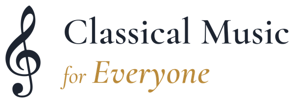

단체 소개
음악은 특별한 날의 일이 아니라 일상의 일이어야 합니다.
2024년 1월 더블린에서 시작한 커뮤니티 음악 사회적기업입니다. 전문 연주단체가 아니라, 직접 연주하는 것이 핵심인 참여형 공동체입니다.
미션
나이가 몇이든, 어디서 왔든, 몸이 어떻든, 형편이 어떻든, 음악을 알든 모르든 실연을 만날 수 있게 합니다. 연주를 가르치고, 곁에 앉아 함께 연주하고, 음악이 평소에 가지 않는 곳으로 찾아가는 방식으로.
비전
도시에서도 농촌에서도, 돌봄 시설에서도, 장애가 있는 삶에서도 함께 음악을 만들 수 있는 아일랜드. 그 문은 누구에게나 열려 있고, 그 일을 하는 교육자들은 안정된 자리에서 일합니다.

변화이론
방 하나, 한 시간, 리코더 하나가 무엇이 되어야 하는가.
들어가는 것에서 달라지는 것까지
가치
다섯 가지 — 실제로 무엇을 감수하는가.
존엄
나이·건강·처지와 무관하게, 여전히 무언가를 창조할 수 있는 사람으로 대합니다.
접근성
가격·거리·낯섦의 장벽을 낮춥니다. 신체적·환경적·심리적 장벽 모두.
동행
한 번 방문하고 끝내지 않고 한 학기 내내 곁에 머뭅니다. 의미는 지속에서 자랍니다.
공동체
나이와 배경과 언어를 가로질러 사람을 잇는 음악.
희망
극적인 변화를 약속하지 않습니다. 작고 진짜인 연결의 순간을 소중히 여깁니다.
교육자의 일자리
음악교육자 대부분이 불안정한 프리랜서 조건에서 일합니다. 제대로 고용하는 것이 두 번째 사회적 목표입니다.

창립자
Andrew Seohyeon Kim · 김서현
더블린에서 활동하는 클라리네티스트이자 오르가니스트, 커뮤니티 음악 실천가입니다. 2024년 1월 Classical Music for Everyone과 Letters Ensemble을 창립했고, 이 사이트의 모든 프로그램을 직접 이끌고 있습니다.
실제로 하는 일
전부 같은 방 안에 있습니다. 리코더 수업의 강사, 강의·연주의 진행자, 동행을 예약하는 사람, 요양시설에서 클라리넷을 부는 연주자, 그 자리에서 앙상블을 지휘하는 사람이 같은 한 사람입니다.
이건 설명인 동시에 한계입니다. 주당 50회 세션이 아니라 다섯 개 프로그램이라고 말하는 이유가 여기 있고, 음악교육자를 제대로 고용하는 것이 좋은 아이디어가 아니라 두 번째 사회적 목표인 이유도 여기 있습니다. 이 일은 한 사람 위에서 커지지 않고, 커져서도 안 됩니다.
2026년 5월 TU Dublin Conservatoire에서 연주 전공 음악학사(우등)를 졸업했습니다. Dr Paul Roe에게 클라리넷을 배우며 오르간·첼로·피아노를 함께 공부했고, 졸업 연구는 은퇴 프레젠테이션 수녀 일곱 분을 위해 직접 설계하고 이끈 10주 리코더 앙상블에 대한 실천 기반 연구였습니다. 지금의 교육 프로그램 전체가 그 위에 서 있습니다.
교회와 커뮤니티는 하나의 실천
2022년 9월부터 Dolphin’s Barn 성모 통고 성당 음악감독, 2023년 9월부터 Rathgar 삼주보 성당의 주일 오르가니스트로 봉사하고 있습니다 — 성주간 전례, 학교 미사와 위령 미사, 장례, 본당 음악회.
본당과 수도 공동체에는 이 일을 ‘음악을 통한 평신도 사도직’으로 설명합니다. 연주 시리즈가 아니라 함께 있어 주는 봉사라는 뜻입니다. 커뮤니티 활동과 같은 실천을, 그렇게 물어본 분들의 언어로 설명한 것입니다.
“음악으로, 그는 그렇지 않았다면 홀로 남았을 이들에게 격려와 존엄과 영적인 동행을 건넵니다.”
더블린 보좌주교 Donal Roche · 2026년 2월 16일배움과 역할
이 실천이 어디에서 왔는가.
학력과 훈련
- 연주 전공 음악학사(우등) — TU Dublin Conservatoire, 2022–2026
- 클라리넷 — Dr Paul Roe
- 오르간 — Simon Harden · 첼로 — Arun Rao · 피아노 — Sam Armstrong
- 지휘 — 아일랜드 청소년오케스트라협회(IAYO) · London Conducting Workshop · TU Dublin 특별 과정
- 사회적기업 — TU Dublin Venture Lab, 2024년 9월부터
- 장학 — 한국 천주교 주교회의 평신도사도직위원회 명도회, 2025년 3월부터
현재 맡고 있는 일
- 창립자 · 프로젝트 리드 — Classical Music for Everyone, 2024년 1월부터
- 창립자 · 음악감독 · 지휘 — Letters Ensemble, 2024년 1월부터
- 음악감독 — 성모 통고 성당(Dolphin’s Barn), 2022년 9월부터
- 오르가니스트 — 삼주보 성당(Rathgar), 2023년 9월부터
- 학생 홍보대사 — TU Dublin, 2024년 8월부터
그 전에
- Baram, 2023–24 — 한국 전통음악과 클래식 듀오. 대사관 행사와 문화 전시
- Chorus of Angels, 2023 — 더블린의 한인·다문화 어린이 합창단
- At Home Ensemble Project, 2020–21 — 코로나19 기간의 온라인 관악 앙상블
자원봉사
- 세계청년대회, 리스본, 2023 — 진행·음악·전례·언어 지원
- ICA ClarinetFest, 더블린, 2024 — 지원과 통역
- 제13회 더블린 국제 피아노 콩쿠르, 2025 — Team Harmony
- 청년 희년, 로마, 2025 · Korea Festival, Farmleigh House, 2025
포르투갈과 이탈리아는 자원봉사지입니다. 저희 기록의 ‘4개국’은 연주한 네 나라입니다.
함께 연주하는 예술가
- 안수정, 피아노 — RIAM 음악박사(2022). 제58회 마리아 카날스 국제콩쿠르 1위
- 정혜리, 소프라노 — 신라대학교, 로마 산타 체칠리아 국립음악원
- 김재원, 해금 — Shared Voices of Care와 An Autumn Concert(2026) 객원
연주해 온 곳
음악이 잘 들어가지 않는 방들.
요양·거주 돌봄시설 · 수도 공동체 · 본당 · 대학 · 국립 콘서트홀 · HSE 주간보호센터 · 노숙인 쉼터 · 커뮤니티 센터.
아일랜드
- National Concert Hall · TU Dublin, Grangegorman
- Tallaght University Hospital · Rua Red, Tallaght
- 성모 통고 성당(Dolphin’s Barn) · 삼주보 성당(Rathgar)
- Carmelite Community Centre · Blessed Sacrament Chapel
- Clondalkin Lodge · Warrenmount, Dublin 8
- 성 골롬반 외방 선교 수녀회, Co. Wicklow
- 마리아의 프란치스코 선교 수녀회, Dublin 5
- Dalgan Park · Kilmessan Church, Co. Meath · Dysart, Co. Westmeath
- HSE EVE Goirtin Hub · Morning Star Hostel, Dublin 7
- Methodist Centenary Church, Ranelagh · Mulhuddart Community Centre, D15
국외
- 루르드 성모 성지, 프랑스
- 파리 외방 전교회 · Palais Brongniart, 파리
- 런던 한인 천주교회, 영국
- 관덕정 순교자 기념관, 대구, 한국
주장하지 않는 것
지금까지의 근거는 참여와 지속과 증언이지, 측정한 성과가 아닙니다. 검증된 도구로 웰빙을 재 본 적이 없고, 찾아가는 음악회의 관객 수도 세어 두지 않았습니다. 2026년 가을 기수부터 간단한 사전·사후 조사와 동의 절차를 시작합니다.
우리가 하는 일
다섯 개의 프로그램, 각각의 페이지.
두 개의 축 — 사람들에게 연주를 가르치는 일과, 콘서트홀까지 오기 어려운 분들을 위해 찾아가 연주하는 일. 다섯을 같은 분량으로, 같은 항목으로, 같은 순서로 적었습니다. 그 가운데 주된 것은 없습니다.
우리가 하는 일 전체
아이덴티티
디자인 표준을 공개합니다.
작은 단체가 이름을 올리는 모든 것은, 디자인 도구로 만들었든 본당 주보에 타이핑했든 같은 곳에서 나온 것처럼 보여야 합니다. 저희가 지키는 기준이고, 저희를 대신해 무언가를 인쇄하는 파트너도 이 기준으로 저희를 붙잡을 수 있도록 공개합니다.

마크
높은음자리표와 워드마크를 함께 쓰며, 2026년 8월 17일에 확정했습니다. 워드마크 안의 비례가 의미를 지므로 절대 바뀌지 않습니다 — ‘for’는 작게, ‘Everyone’은 크고 금색으로. 이름은 하나의 모양을 가진 고유명사입니다 — Classical Music for Everyone — 전부 대문자로 쓰지 않고, 대외 문안에서 CMFE로 줄이지 않으며, 다른 서체로 다시 조판하지 않습니다.
언제나
- 자리표와 워드마크를 함께
- 네 면 모두에 자리표 너비의 절반만큼 여백
- 밝은 바탕 → 가로형, 어두운 바탕 → 반전형
- 사진 위에 놓을 때는 뒤가 조용한 자리에
절대로
- 늘이거나 누르거나 기울이거나 색을 바꾸지 않습니다
- 그림자·외곽선·광채를 넣지 않습니다
- ‘for’와 ‘Everyone’을 같은 크기로 두지 않습니다
- 파비콘 크기를 넘어서 자리표만 쓰지 않습니다
색
여덟 개의 값을 한 번만 정의합니다. 이 사이트의 모든 색은 그중 하나이거나 거기서 파생된 톤입니다. 컴포넌트가 자기 색을 새로 만들어 쓰는 일은 없습니다.
#1D2430
로고 바탕색, 본문, 어두운 밴드#B8893A
로고 금색, 괘선, 화살표, 도식 선#D9B36A
반전 로고의 금색, 어두운 면 위 강조#FAF5EE
거의 모든 페이지의 배경#33405C
인쇄물의 패널과 블록#B4914F
인쇄물의 액센트#8C4A56
강조 — 아껴 쓰고, 본문에는 쓰지 않습니다#5F6B7D
보조 텍스트더 예쁜 선택지를 포기하게 만드는 규칙 하나.
Gold Bronze는 크림 바탕에서 대비가 2.9:1이라 본문 크기에서 떨어집니다. 그래서
글자로 쓰는 금색은 언제나 어둡게 조정한 #7F5C1C이고, 금색 버튼의
글자는 흰색이 아니라 잉크 네이비입니다. 이 사이트의 모든 글자·배경 조합은 WCAG AA를
통과합니다. 예외는 로고 하나뿐인데, 로고는 이미지이고 색을 바꾸지 않기 때문입니다.
서체
세 벌이고, 네 번째는 들이지 않습니다. EB Garamond는 로고 워드마크의 Cormorant Garamond과 같은 계보의 올드스타일 세리프라, 제목이 로고와 다투지 않고 맞물립니다. 한국어는 행간을 더 주고 음수 자간을 덜 조입니다. Noto Sans KR에는 둘 다 필요하기 때문입니다.
SemiBold. 제목·헤드라인·디스플레이 크기.
Regular · SemiBold · Bold. 본문, 표, 캡션, 모든 라벨.
Regular · Medium · Bold. 한국어 페이지의 제목과 본문 모두.
로고의 글자는 외곽선으로 변환돼 있어, 이 사이트는 이 서체를 불러오지 않습니다.
도식
설명이 여든 단어를 넘어가면 문단으로 두지 않고 그림으로 옮깁니다. 이 사이트의 도식은 모두 같은 네 가지 표시로만 그립니다. 그래서 아홉 개가 제각각인 순서도가 아니라 한 세트로 읽힙니다.
이 사이트의 도식을 읽는 법